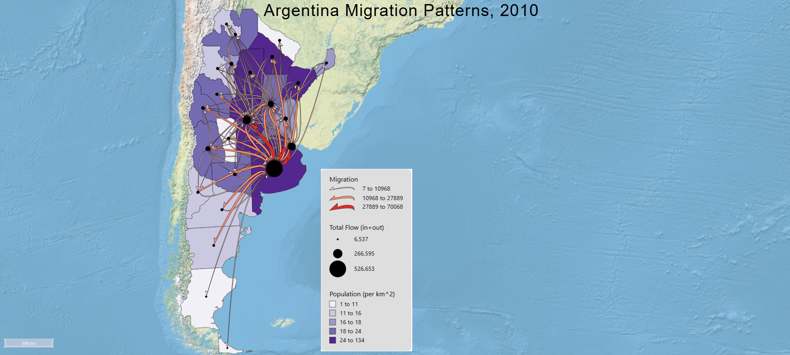
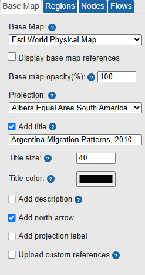
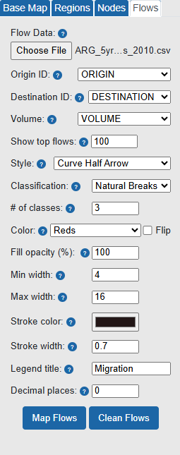
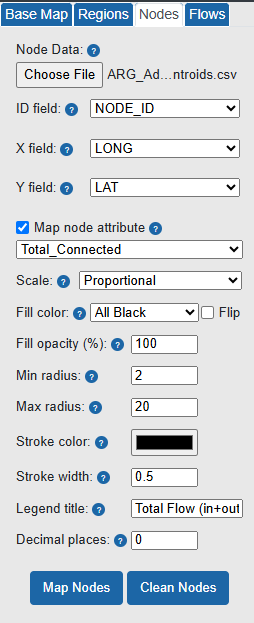
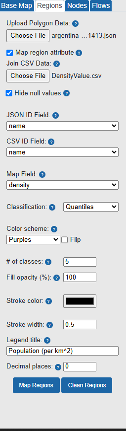

Final Flow Map

Flow map of internal migration patterns in Argentina in 2010, showing major origin–destination migration flows, province-level population density, and total connected flow at each node.
This map visualizes the dominant internal migration flows among Argentine provinces in 2010. The flow lines represent major origin–destination migration connections, the node symbols show total connected flow at each province, and the choropleth background shows population density.
Flow Map Design
The map was designed to emphasize the dominant migration structure while still preserving geographic context. The flow layer uses curved half-arrow symbols because the arrows communicate direction and the curved lines help separate connections that would be harder to follow as straight lines.
Only the top 100 flows were displayed to reduce clutter and keep the strongest migration corridors readable. Flow magnitude was classified with Natural Breaks into three classes, using a red color ramp and varying line widths to create a clear visual hierarchy between smaller and larger migration flows.
The node layer uses proportional black circles to represent total connected flow, which combines incoming and outgoing migration. This makes it possible to identify the strongest migration hubs. The choropleth background maps population density with five quantile classes using a purple sequential color scheme, so the reader can compare migration intensity with the broader population structure.
FlowMapper Project File
The FlowMapper project file can be opened or downloaded to review and reload the complete map design.
Open FlowMapper Project File Download FlowMapper Project FileFlowMapper Layer Settings
The images below document the main FlowMapper layer selections used to create the final map.

Basemap settings

Flow layer settings

Node layer settings

Region layer settings
Interpretation of Flow Patterns
The map shows a strongly centralized migration structure, with the most intense internal migration focused on Buenos Aires Province and the broader east-central corridor of Argentina. Buenos Aires has the largest total connected flow, followed by Córdoba, Capital Federal, Santa Fe, and Mendoza, which shows that a small number of provinces dominate the national migration network.
Buenos Aires Province is both the strongest sender and the strongest receiver of migrants. Other important sending locations include Córdoba, Santa Fe, Capital Federal, and Mendoza. The strongest receiving locations are also concentrated in the east-central region, especially Buenos Aires, Capital Federal, and Córdoba.
The general direction of the strongest flows is from the interior toward the east-central part of the country, especially toward the Buenos Aires–Capital Federal area. Several important flows also connect central provinces such as Córdoba and Santa Fe, showing that the migration system includes both national concentration and regional circulation.
The flow pattern is closely related to the population-density background and node-symbol pattern. Provinces with larger total connected flow are mainly located in the more populated eastern and central parts of Argentina, while many western, northern, and southern peripheral provinces have smaller nodes and fewer major connections. This indicates a core–periphery migration structure shaped by Argentina’s major urban and economic centers.
References
Koylu, C., & Guo, D. (2017). Design and evaluation of line symbolizations for origin–destination flow maps. Information Visualization, 16(4), 309–331.
Koylu, C., Tian, G., & Windsor, M. (2022). FlowMapper.org: A web-based framework for designing origin-destination flow maps. Journal of Maps.